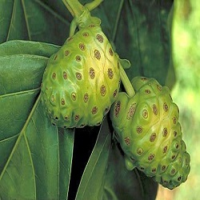

Noni Extract
The noni plant, native to Asia, Australia, and the islands of Polynesia, is a small, shrubby tree. It is used to treat variety of health
problems such as Diabetes, Blood pressure, pains etc. People usually take noni by mouth for colic,